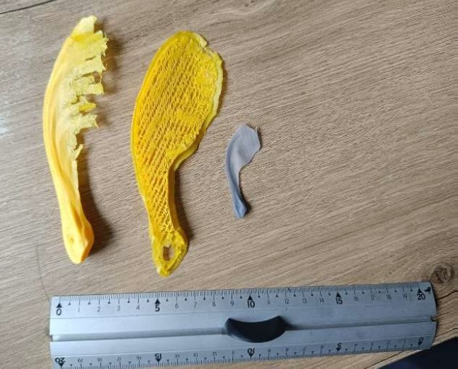
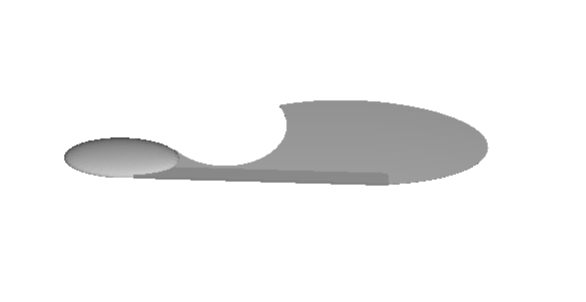
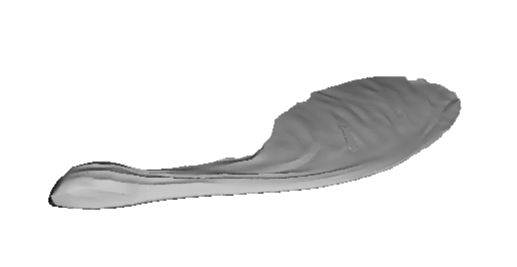

At ENSAM, I worked on a team project to design a 1:10 scale bio-inspired wing modeled after a samara seed. We explored several materials and fabrication methods, including polystyrene, 3D printing, and laminated paper, in order to study how geometry, flexibility, and mass distribution affect gliding stability. Iterative prototyping and flight testing showed that a lightweight paper design could reproduce behavior similar to that of a natural samara, while highlighting opportunities to improve stabilization and aerodynamic profile. The project gave me hands-on experience in bio-inspired design, prototyping, experimental testing, and research-style technical writing.


With 3D SCAN
